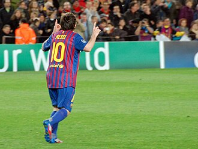

.png)
.png)
.png)

2012: A record-breaking year

As Messi maintained his goalscoring form into the second half of the season, the year 2012 saw him break several longstanding records. On 7 March, two weeks after scoring four goals in a league fixture against Valencia, he scored five times in a Champions League last 16-round match against Bayer Leverkusen, an unprecedented achievement in the history of the competition.[126][127] In addition to being the joint top assist provider with five assists, this feat made him top scorer with 14 goals, tying José Altafini's record from the 1962–63 season, as well as becoming only the second player after Gerd Müller to be top scorer in four campaigns.[128][129] Two weeks later, on 20 March, Messi became the top goalscorer in Barcelona's history at 24 years old, overtaking the 57-year record of César Rodríguez's 232 goals with a hat-trick against Granada.[130]
Messi pointing to the sky following his record five-goal display against Bayer Leverkusen in the last 16 of the UEFA Champions League in 2012
Despite Messi's individual form, Barcelona's four-year cycle of success under Guardiola – one of the greatest eras in the club's history – drew to an end.[131] Although Barcelona won the Copa del Rey against Athletic Bilbao on 25 May, its 14th title of that period, the team lost the league to Real Madrid and was eliminated in the Champions League semi-finals by the eventual champions, Chelsea, with Messi sending a crucial second-leg penalty kick against the crossbar.[132][133] In Barça's last home league match on 5 May, against Espanyol, Messi scored all four goals before approaching the bench to embrace Guardiola, who had announced his resignation as manager.[134] He finished the season as league top scorer in Spain and Europe for a second time, with 50 goals, a La Liga record, while his 73 goals in all competitions surpassed Gerd Müller's 67 goals in the 1972–73 Bundesliga season, making him the single-season top scorer in the history of European club football.[135][136]
Under manager Tito Vilanova, who had first coached him aged 14 at La Masia, Messi helped the club achieve its best-ever start to a La Liga season during the second half of 2012, amassing 55 points by the competition's midway point, a record in Spanish football.[137] A double scored on 9 December against Real Betis saw Messi break two longstanding records: he surpassed César Rodríguez's record of 190 league goals, becoming Barcelona's all-time top scorer in La Liga, and Gerd Müller's record of most goals scored in a calendar year, overtaking his 85 goals scored in 1972 for Bayern Munich and West Germany.[138] Messi sent Müller a number 10 Barcelona shirt, signed "with respect and admiration", after breaking his 40-year record.[139] At the close of the year, Messi had scored a record 91 goals in all competitions for Barcelona and Argentina.[140] Although FIFA did not acknowledge the achievement, citing verifiability issues, he received the Guinness World Records title for most goals scored in a calendar year.[141][142] As the odds-on favourite, Messi again won the FIFA Ballon d'Or, becoming the only player in history to win the Ballon d'Or four times.[140][143]